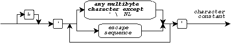
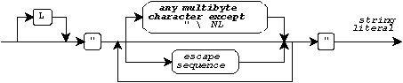
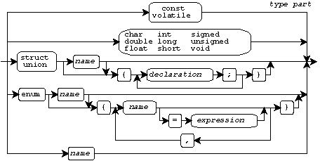
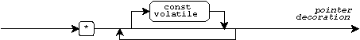
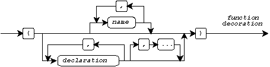

C Tokens · Integer and Floating-Point Constants · Character Constants and String Literals · Declaration Syntax · Storage Class and Type Parts · Declarators · Object Initializers and Bitfield Specifications · Function Definition Syntax · Expression Syntax
The final stage of preprocessing is to convert all remaining preprocessing tokens in the translation unit to C tokens. The translator then parses these C tokens into one or more declarations. In particular:
You use expressions in declarations to specify values to the translator or to specify the computations that the program performs when it executes. This document shows the forms of all C tokens. It also summarizes the syntax of declarations, function definitions, and expressions. You use these syntactic forms, with preprocessing directives and macros, to write a C program.
Each C token derives from a preprocessing token. Additional restrictions apply, however, so not all preprocessing tokens form valid C tokens. You must ensure that only valid C tokens remain in the translation unit after preprocessing.
Every preprocessing name forms a valid C token. Some of the names that you write are keyword C tokens (names that have special meaning to the translator). The following Table lists all defined keywords:
auto double int struct break else long switch case enum register typedef char extern return union const float short unsigned continue for signed void default goto sizeof volatile do if static while
A name C token is a preprocessing name that is not a keyword:
You must ensure that distinct names with external linkage differ within the first six characters, even if the translator does not distinguish between lowercase and uppercase letters when comparing names.
Every preprocessing number in the translation unit must be either an integer constant or a floating-point constant C token. An integer constant is a preprocessing number that represents a value of an integer type:

The value of an integer constant depends on its form:
0x or 0X indicates a
hexadecimal
(base 16) integer.
0 indicates an
octal
(base 8) integer.
You write any combination of:
l or L suffix
to indicate a long typeu or U suffix
to indicate an unsigned typeA floating-point constant is a preprocessing number that represents a value of a floating-point type. You write either a decimal point, an exponent, or both to distinguish a floating-point constant from an integer constant:

You write at most one f or F suffix
to indicate type float,
or at most one l or L suffix
to indicate type long double.
A character constant C token has the same form as a preprocessing character constant:

Its value depends on the character(s) you specify and any prefix you write.
A string literal C token has the same form as a preprocessing string literal:

Its value depends on the character(s) you specify and any prefix you write.
An escape sequence has the same form as within a preprocessing character constant or string literal:

An operator or
punctuator token
has the same form as a preprocessing
operator or
punctuator,
except that the tokens
# and ## (and %: and %:%:, with
Amendment 1)
have meaning only during preprocessing. Moreover, the remaining
Amendment 1 additions map to other C tokens:
<: becomes [
:> becomes ]
<% becomes {
%> becomes }
The following table shows all remaining operators and punctuators:
... && -= >= ~ + ; ]
<<= &= -> >> % , < ^
>>= *= /= ^= & - = {
!= ++ << |= ( . > |
%= += <= || ) / ? }
-- == ! * : [
The translator parses all C tokens that constitute a translation unit:

as one or more declarations, some of which are function definitions. A declaration (other than a function definition) takes a variety of forms:

Declarations can contain other declarations. You cannot write a function definition inside another declaration, however. There are many contexts for declarations. Some forms of declarations are permitted only in certain contexts.
You begin a declaration with an optional storage class keyword, intermixed with zero or more type parts:

The storage class keyword is from the set:
auto extern register static typedef
You write a type part as any one of the following.
const volatile
char double float int long short signed unsigned void
You can write only certain combinations of type parts.
You can follow the storage class and type part of a declaration with a list of declarators separated by commas. Each declarator can specify a name for the entity that you are declaring as well as additional type information:

You write a declarator as, in order:
1. zero or more pointer decorations
2. an optional name or a declarator in parentheses
3. zero or more array decorations or at most one function decorations
A pointer decoration consists of an asterisk (*) followed
by an optional list of type qualifier keywords:

An array decoration consists of an optional expression enclosed
in brackets ([]):

A function decoration is a sequence of one of the following:
In either sequence, the parameters are separated by commas and enclosed in parentheses:

Some of these forms are permitted in certain contexts and not in others.
You can follow each declarator with one of the following:
=) followed by a value:)
followed by an expressionYou write an
object initializer
value as either an expression
or a list of such values separated by commas and enclosed in braces
{}:

You can write a trailing comma after the last value in a comma separated list of object initializers.
A function definition declares a function and specifies the actions it performs when it executes:

You write a function definition as, in order:
1. an optional storage class and type parts
2. a declarator
3. zero or more parameter declarations each terminated by a semicolon
4. a block
The declarator contains a function decoration that describes the parameters to the function. You can write parameter declarations before the block only if the function decoration contains a list of parameter names.
A block consists of braces surrounding, in order:
1. zero or more declarations each terminated by a semicolon
2. zero or more statements

A block contains a sequence of statements that specifies the actions performed by the block when it executes:

Here, opt represents an optional expression:

Statements specify the flow of control through a function when it executes. A statement that contains expressions also computes values and alters the values stored in objects when the statement executes.
You use expressions to specify values to the translator or to specify the computations that a program performs when it executes.

Only certain combinations of operators and terms form valid expressions.
You write a term as one of the following:

You write an infix operator as one of the following:
? :
enclosing another expression

You write a prefix operator as one of the following:
sizeof
You can write only certain forms of declarations in a type cast.
You write a postfix operator as one of the following:
++
--
[]
()
->, followed by the name
of a structure or union member

You can write only certain forms of expressions in some contexts.
See also the Table of Contents and the Index.
Copyright © 1989-1996 by P.J. Plauger and Jim Brodie. All rights reserved.